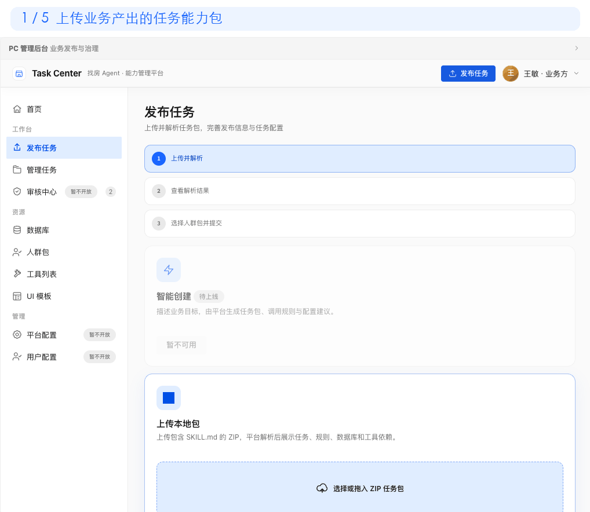
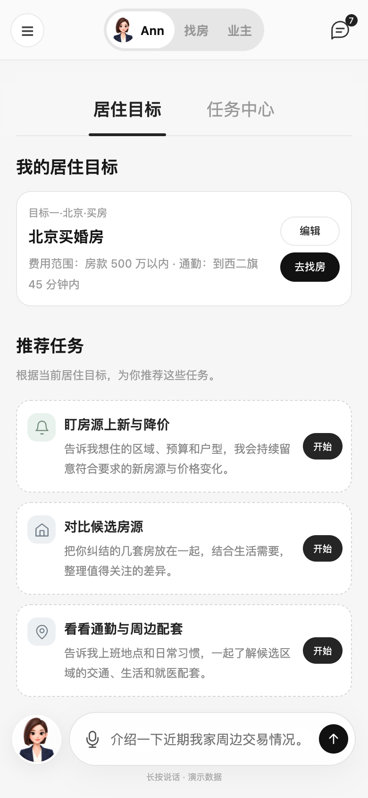
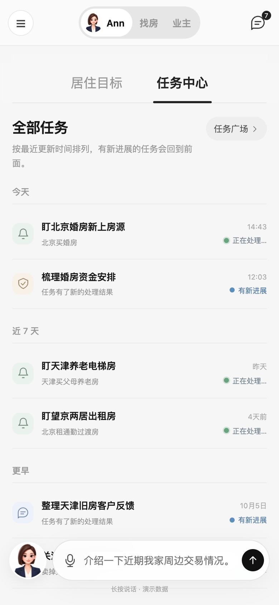

把你的业务能力，
接入安住 AI
你负责把业务说清楚，C 端能力平台负责把能力配置好，安住负责面向用户提供入口和结果。
合作方不需要编写模型 Prompt；需要 B 端服务者参与时，通过 Echo 承接执行。
业务接入只需要关注三件事
你需要准备什么
准备五类交付物；如需 B 端服务者履约，再补充 Echo 材料。点击卡片查看盯盯房示例。
01业务场景
交付物：一份业务需求文档，写清用户、场景和目标结果。
查看盯盯房示例
- 目标用户：正在找房、需要持续关注新房源的用户。
- 核心需求：用户设置区域、户型、预算等条件后，系统持续查找新增或降价房源。
- 用户结果：匹配到新房源时收到通知，并能查看匹配原因和房源详情。
- 任务边界：负责持续监控和通知，不替用户咨询、带看或交易。
- 典型需求：“帮我盯上海内环内、500 万以内的两居室，有新房源就告诉我。”
02调用规则
交付物：一份调用规则说明，描述何时调用、需要什么、何时停止。
查看盯盯房示例
- 调用条件：用户明确表达“持续关注、以后有新的告诉我”等长期监控意图。
- 必填信息：城市、区域或小区、预算口径；户型等条件可选。
- 追问规则：缺少城市或预算口径时，补齐后再创建任务。
- 不调用：“帮我找一套房”“推荐几套房”等一次性找房需求不创建盯房任务。
- 确认与停止：创建前展示条件并让用户确认；用户可随时查看、修改名称或停止任务。
03数据与工具
交付物：一份数据与接口清单，列出希望调用的数据库和要打通的接口。
查看盯盯房示例
- 房源数据库或搜索接口：按城市、区域、户型、面积、价格等条件查询房源。
- 房源变化数据：识别新增、下架、价格变化及最新更新时间。
- 任务存储接口：创建、查询、修改和停止用户的盯房任务。
- 消息通知接口：匹配到房源后向用户发送提醒。
- 每项资源同时给出字段说明、调用方式、权限、测试环境、业务 Owner 和技术联系人。
04验收案例
交付物：一组业务自测 Case，写明输入、预期动作和预期结果。
查看盯盯房示例
- 正常创建：“盯浦东 400 万以内两居室” → 补齐必要信息、确认后创建任务。
- 信息不足：“帮我盯个房” → 追问城市、范围和预算，不直接创建。
- 不应调用：“推荐几套静安的房子” → 进入一次性找房，不创建盯房任务。
- 价格变化：“预算跟随本人挂牌价变化” → 按约定口径更新任务预算。
- 任务管理：“把盯房任务改名”“不盯了” → 正确查询、重命名或停止对应任务。
- 异常与权限：接口超时、无匹配房源、访问他人任务时，给出正确提示且不越权。
05目标人群包
交付物：一个已就绪的人群包，业务自行圈定这个任务要面向的用户。
查看盯盯房示例
- 人群包名称：例如“北京购房意向人群”。
- 圈选口径：近 30 天有北京购房意向，且已表达区域或预算偏好。
- 数据来源与更新频率：例如用户画像平台，每日更新。
- 人群包 Owner：负责口径、授权和失效处理。
- 人群包只用于召回候选任务，同一用户命中多个任务时，由平台统一排优先级。
如何完成配置
以“盯盯房”为例，下面用当前 Demo 展示一个业务能力从上传包到提交审核的完整配置过程。
开始发布配置前，先完成这些前置配置
发布页只能选择已经就绪的人群包、数据、工具和 B 端任务，不在发布表单里临时创建。
业务先自行圈定目标用户，完成人群口径、数据来源、更新频率、授权和 Owner 配置，再同步到 C 端能力平台。
先把自己的数据库或数据源注册到数据后台，配好字段、数据范围、访问权限和 Owner。
先将需要调用的接口注册为平台工具，完成可用性校验、读写权限申请和责任人确认。
先在 Echo 创建对应的 B 端任务，提供 B 端 Skill，并配好输入、处理规则、返回结果和异常升级方式。

配置后有什么效果，用户怎么用
审核通过后还要配置发布范围。只有同时在发布范围内且命中人群包的用户，该任务才会进入候选池。
移动端效果示意 基于新版 UI Demo


整体协作关系
用户从安住发起需求；业务能力统一接入 C 端能力平台；需要服务者履约时，再由 C 端能力平台连接 Echo。
获得结果↔
返回结果↔
回传状态与结果↔
需要 B 端服务者时：接入 Echo
普通查询和计算由 C 端能力平台连接工具完成；需要经纪人、顾问或专家参与时，再连接 Echo。
Echo｜B 端任务平台
接收 C 端能力平台发送的任务和上下文，加载业务提供的 B 端 Skill，组织 B 端 Agent 或真人服务者执行，再将状态和结果返回安住。
谁来审核
审核根据业务内容、资源依赖和风险程度分层进行，C 端能力平台审核人负责最终发布决定。
| 审核角色 | 确认内容 | 什么时候需要 |
|---|---|---|
| 业务 Owner | 业务场景、调用规则、目标人群包、结果和案例 | 必须 |
| 人群包 Owner | 圈选口径、数据来源、更新频率、授权和失效处理 | 必须 |
| 数据或工具 Owner | 数据来源、接口、权限和异常处理 | 使用相关资源时 |
| Echo / B 端 Owner | B 端 Skill、服务边界和返回结果 | 接入 Echo 时 |
| C 端能力平台审核人 | 材料、测试、人群包、权限、安全、版本和发布范围 | 必须，负责终审 |
| 安全或合规负责人 | 敏感数据、高风险写操作和特殊合规要求 | 命中风险时 |